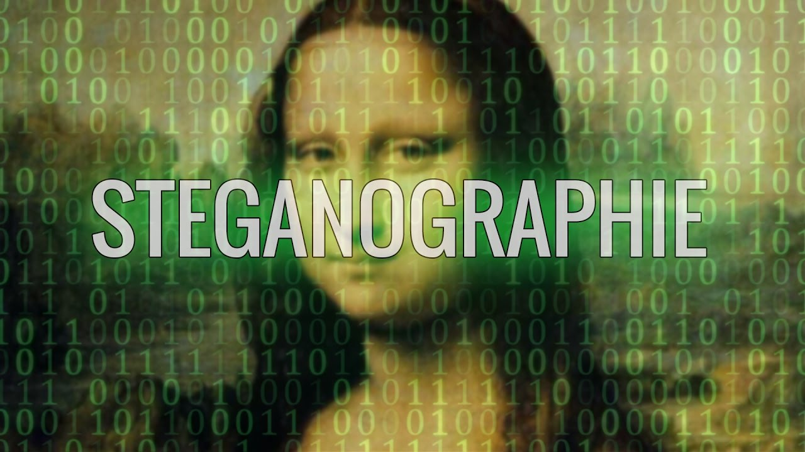
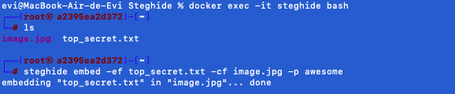
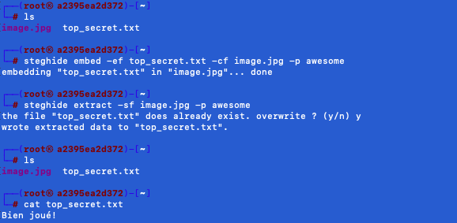

Steghide est un programme de stéganographie capable de cacher des données dans une grande variété de fichiers image
et audio. La couleur et les fréquences d'échantillonnage ne sont pas modifiées séquentiellement, ce qui rend
l'incorporation résistante aux tests statistiques de premier ordre.

C'est un outil de stéganographie qui permet de couvrir des enregistrements confidentiels à l'intérieur d'une
image ou d'un enregistrement sonore avec une phrase de passe. Il intègre le groupe d'images BMP et JPEG, le groupe
de sons AU et WAV.
Pour ce tutoriel, nous utiliserons docker pour avoir une machine pour lancer l'outil Steghide.
Télécharger le docker suivant :
docker
Taper les commandes suivantes (en étant dans le bon répertoire où se trouve le fichier docker-compose.yml):
docker-compose up -dPour utiliser la machine avec l'outil Steghide, tapez :
docker exec -it steghide bash
Nous souhaitons cacher des données dans l'image JPEG "image.jpg" en incorporant le fichier texte nommé
"top_secret.txt", dans lequel nous avons écrit nos données confidentielles.
Pour cacher des données dans une image, utiliser la commande suivante :
Nous avons utilisé les options -ef et -cf respectivement, ces options réfèrent au fichier d'intégration (le fichier qui sera intégré) et fichier de couverture (le fichier utilisé pour incorporer les données). L'utilisation de Steghide permet d'ajouter une couche supplémentaire de sécurité en nous permettant d'utiliser un mot de passe avec l'option -p.
Le résultat apparait comme ceci :

Tant que vous connaissez la phrase de passe, il est assez facile d'extraire des données dissumulées dans l'image
JPEG.
Pour extraire des données dans une image, utiliser la commande suivante :
Le résultat apparait comme ceci :
Le tutoriel est terminé, et vous savez maintenant comment manipuler Steghide. Pour valider ce tutoriel, il vous suffira de rentrer "Bien joué!" dans la case de validation.